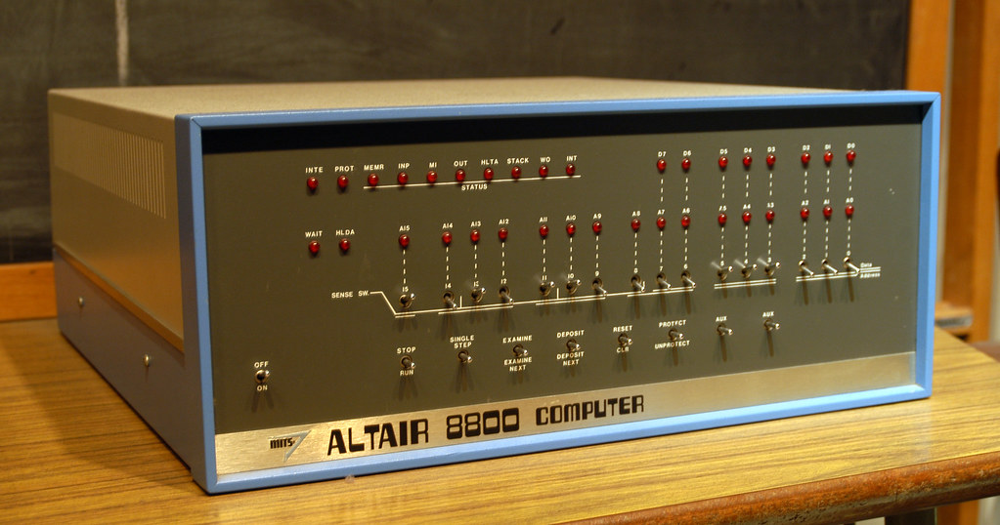
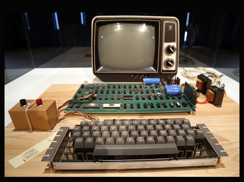

Introduction
- Computer Network Key Chronological Events
- World Wide Web Key Chronological Events
- Browser Wars and Advances
- Search Revolution
- E-commerce
- People and Web
What is the Internet?
The Internet is a global network where many computers, mobiles, and electronics interconnect with each other to communicate with anyone else in the world. Internet is a vital information tool and indispensable for our society. Some people would be surprised to know that first computers were large and never intended to communicate, but now this is by far the opposite.
In the picture below shows the ENIAC computer which was the first general-purpose electronic digital computer. 'Electronic Numerical Integrator And Computer' was 150 feet wide with 20 banks of flashing lights. Ca. 1946
After ENIAC computer was introduced back in 1946, personal computers were next with Altair 8800 (Figure 2), and Apple-1 (Figure 3)
